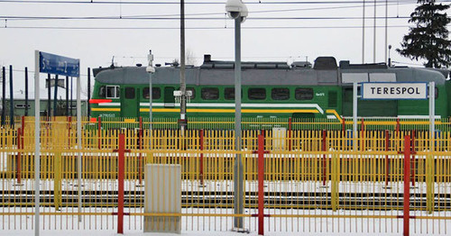
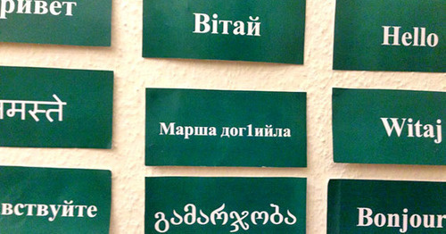
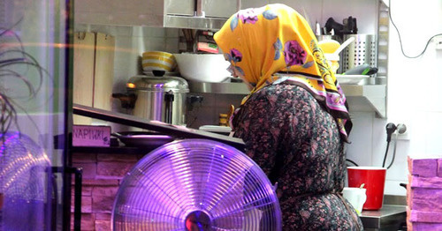
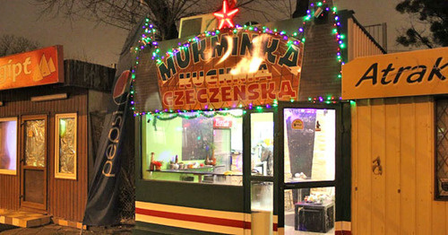
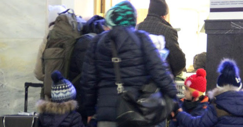

Несмотря на сокращение числа терактов и активности боевиков в Чечне, чеченцы не прекращают попыток уехать в Европу и получить там статус беженца. Они продолжают уезжать из региона, который официальные власти считают одним из спокойных и процветающих. Одни из них стремятся получить статус беженца из-за преследований на родине, другие едут, надеясь заработать денег, третьи — получить квалифицированную медицинскую помощь для себя и своих близких. Журналист «Кавказского узла» проехался по всему пути, которым обычно следуют чеченские беженцы, уезжающие из России в Европу, чтобы получить убежище («азюль»), таким образом совершив своеобразный «азюльтрип»1.
Азюльтрип по-чеченски
Несмотря на сокращение числа терактов и активности боевиков в Чечне, чеченцы не прекращают попыток уехать в Европу и получить там статус беженца. Они продолжают уезжать из региона, который официальные власти считают одним из спокойных и процветающих.
Одни из них стремятся получить статус беженца из-за преследований на родине, другие едут, надеясь заработать денег, третьи — получить квалифицированную медицинскую помощь для себя и своих близких.
Большинство стремится получить статус беженца, выучить детей, чтобы уже они смогли свободнее интегрироваться в европейское общество. Далеко не всем удается достигнуть желаемого — многих чеченцев депортируют из стран Европы, возвращая в Россию или же в место первоначального въезда в Евросоюз. Те, кому удается задержаться в странах Европы, зачастую продолжают оставаться людьми второго сорта, а общее недоверие к выходцам с Северного Кавказа, которые в массовом сознании ассоциируются с исламской радикализацией и терроризмом, не добавляет им популярности и все чаще мешает получить заветный статус беженца. Последние теракты в европейских странах — Франции и Бельгии, в которых «желтые» и правые СМИ сразу же огульно обвинили выходцев с Кавказа, лишь подтверждает это правило.
Журналист «Кавказского узла» проехался по всему пути, которым обычно следуют чеченские беженцы, уезжающие из России в Европу, чтобы получить убежище («азюль»), таким образом совершив своеобразный «азюльтрип».
Отправившись с Белорусского вокзала в Москве, он добрался до белорусского Бреста и дальше на электричке до польского приграничного поста в Тересполе. Задержавшись на том самом перроне, который, когда туда прибывают поезда с беженцами, плотно обступают польские пограничники, наш журналист свободно прошел визовой контроль на вокзале. Для многих чеченцев — это первая точка въезда в Европу, где они должны убедить офицеров погранслужбы пустить их в Польшу, иначе им грозит депортация на территорию Белоруссии. Наш журналист приехал в Варшаву, где пообщался с сотрудниками местной НКО помощи беженцам «Спасение», с чеченцами, ведущими свой небольшой бизнес, с руководителем чеченской культурной ассоциации «Sintar» Луизой Адаевой.
Добравшись до столицы Германии, наш журналист встретился с руководителем Немецко-кавказского общества Эккехардом Маасом, который рассказал, что сюда со своими проблемами регулярно приходят десятки чеченцев. Собранные во время поездки материалы легли в основу статьи, в которой рассказывается, как и почему чеченцы уезжают из Чечни и России.
Сколько уезжает и в какие страны
Основной наземный маршрут — в Польшу через Беларусь. Многие рассматривают Польшу только как точку входа, и стремятся продолжить путь дальше на Запад, в первую очередь в Германию, реже в Австрию, Францию, Бельгию и Данию.
По данным Управления по делам иностранцев Польши, с 2009-го по май 2015 года за статусом беженцев в стране обратилось больше 39,3 тысячи граждан России, большинство из них — выходцы из Чеченской Республики.2
Рекордным по запросам от чеченцев статуса беженцев в Польше и Германии стал 2013 год, когда здесь попросило убежище больше 12,8 и 15,5 тысячи граждан России, 90% из которых выходцы из Чечни. Таким образом, Россия была лидером среди стран, граждане которых искали убежище в Польше и Германии (83,3% и 14,5% от общего количества беженцев).3
Тогда по Чечне активно распространялись слухи, что Германия выделила квоты на прием 40 тысяч чеченцев, что приезжие будут обеспечены всем необходимым, а государство ежемесячно будет выделять от 2 тысяч евро на каждую семью.4 Посольство Германии в Москве, на сайте которого до сих пор висит призыв не верить таким слухам, и сами чеченские беженцы, живущие в Европе, уже не раз опровергали эту информацию.
Несмотря на это, Чечня до сих пор остается регионом, откуда не прекращается поток беженцев в Европу .5 Согласно данным Управления по делам иностранцев, за 2014 год только в Польшу приехало 3663 беженца из Чечни, а с января по ноябрь 2015 года — 2,5 тысячи.6
По данным официальной статистики Польши, чеченцы составляют самую крупную группу соискателей убежища в стране. Связано это с тем, что Польша, как и другие восточно-европейские страны, не является желаемой страной для прошения убежища среди беженцев из Сирии и других стран Ближнего Востока и Африки, и они сюда едут довольно редко. Популярность «польского маршрута» среди чеченских беженцев объясняется тем, что это наиболее легкий и доступный путь попадания в страны Евросоюза из России. Несмотря на продолжающийся поток чеченцев, с началом миграционного кризиса в Европе они перестали быть большой этнической группой соискателей убежища в Западной Европе. Россия, до сих пор занимавшая лидирующее место в списке стран в статистике Евростата откуда приезжают беженцы, спустилась в 2014 году на 9-ю строчку, до сих пор уверенно стоявшая в числе первых стран. Количество беженцев из России в 2014 году, тем не менее превысило 19 тысяч .7
Причины отъезда – преследования на родине и потеря здоровья
Правозащитница Светлана Ганнушкина уверена, что у просящих убежище в странах Евросоюза жителей Чечни есть на то уважительные причины. Главной из них она называет страх, которым пропитано чеченское общество, и нежелание жить по сложившимся в Чечне правилам.
«То, что большинство граждан России, ищущих убежище в европейских странах, жители Чечни — общеизвестный факт. В первую очередь причина почему люди уезжают оттуда — это постоянное ощущение страха. Страх такой, как в 37-м году в Советском союзе», — говорит правозащитница.
Среди других причин она называет коррупцию. По ее словам, в условиях высокой безработицы, чтобы устроиться на любую среднеоплачиваемую работу, на которую есть конкурс, нужно заплатить большие деньги.
Власти Чечни к отъезду жителей относятся по-разному. В разгар оттока чеченцев в 2013 году, Кадыров считал увеличение уезжающих нормальным явлением.8
«Я считаю совершенно нормальным явлением, что россияне, в том числе и чеченцы, обустраивают свою жизнь в Европе, в странах СНГ. Во всем мире идут миграционные процессы. Хотя в прошлом году, например, из 50 тысяч чеченцев, приехавших погостить домой из-за рубежа, 30 тысяч остались в республике».
Его заявление об оставшихся 30 тысячах не подтверждает статистика Росстата, согласно которой в 2013 году в Чечню приехало не больше 12 тысяч человек, а уехало на 4,7 тысячи больше.
В 2014 году Кадыров неожиданно опроверг данные о массовом отъезде жителей Чечни, назвав это мифом. Пост об этом глава Чечни опубликовал в Instagram, заявив, что «Запад хорош только для Закаевых и Удуговых, а простому человеку подобен мачехе».
Руководитель немецко-кавказского общества, известный правозащитник Эккехард Маас, помогающий беженцам в Германии, называет самой большой группой соискателей убежища из Чечни в Германии людей, столкнувшихся с политическим режимом Рамзана Кадырова и Кремля, родственников боевиков, воюющих в составе вооруженных группировок на Северном Кавказе и Сирии, подвергающихся гонениям в Чечне, где за терроризм объявлена коллективная ответственность.
В конце 2014 года в Чечне были сожжены 15 домов родственников боевиков, а сами люди были выдворены из республики. Подробнее об этом писал «Кавказский узел».
Также, по словам Мааса, из Чечни приезжает много больных туберкулезом, онкологией, люди, чьи дети болеют ДЦП.
Согласно отчету Центра мониторинга противодействия распространению туберкулеза Минздрава России от 2013 года, Чеченская Республика в списке регионов с наибольшим количеством больных на одну туберкулезную койку.9
Среди других причин, по которым чеченцы уезжают из России в Германию, Маас называет плачевную ситуацию с правами человека, вторжение власти в частную жизнь людей, нежелание многих быть частью системы, стремление к лучшим экономическим условиям.
Путь в Европу
Грозный — Москва — Брест — Тересполь... Путь чеченских беженцев в Европу начинается на Белорусском вокзале в Москве. Они приезжают на поезде Грозный — Москва, а потом уже отсюда едут в Брест. Из Бреста на электричке добираются до польского пограничного поста в городе Тересполь.
Проводники скорого поезда Москва — Брест уже не наблюдают такого потока чеченцев, который был два года назад, когда они заполняли половину всего состава, но утверждают, что практически в каждом поезде из Москвы в Брест едут чеченские семьи с детьми.
Молодая женщина Амина с двумя детьми возвращается в Литву, где у ее семьи годовой вид на жительство с правом на продление. В Чечню Амина приезжала повидаться с родными. История ее беженства началась 7 лет назад, когда был убит бывший командир батальона «Восток» Сулим Ямадаев.
«Муж служил в батальоне „Восток“. Когда батальон расформировали, ему, как и многим его коллегам, поступали разные предложения перейти на работу к кадыровцам, но он не хотел работать с ними и каждый раз отказывался. После убийства Сулима Ямадаева, были убиты несколько бывших коллег мужа, которые отказались работать в кадыровских органах, что и стало причиной нашего бегства из России».
В 2010 году Амина с супругом уехали в Данию, там у них родились двое детей, но, несмотря на это, в 2012 году им отказали в предоставлении статуса беженцев и депортировали в Москву. Из Москвы семья Амины через Белоруссию уехала в Литву, где им предоставили убежище, а через год и вид на жительство.
Амина одета в хиджаб, закрывающий, в том числе, и часть подбородка. Такой стиль одежды в Чечне считается признаком ваххабизма, последователей которого Рамзан Кадыров называет шайтанами и террористами 10, а подражание им в Чечне может закончиться похищением и пытками. На вопрос, не возникало ли у нее проблем из-за этого и как она себя чувствует в Чечне, девушка отвечает, что все время нахождения в Чечне сидела дома.
До замужества Амина танцевала в женском танцевальном ансамбле, тогда она платок надевала только на сцене. Переломный момент наступил в Дании, в лагере беженцев. Там девушка слушала проповеди, в которых говорили, что женщине лучше всего быть закрытой, а муж только приветствовал ее решение.
«То, что я закрылась, не означает, что я радикалистка, — говорит она. — В Чечне нет свободы слова и справедливости, люди боятся говорить правду и заявлять о нарушениях их прав. Я бы не хотела возвращаться в такую республику, где у меня могут быть проблемы из-за моей одежды и где я не могу высказать свое мнение, а если что-то скажу, то меня могут публично унизить, избить или убить, но главная причина не в этом, а в том, что муж не может вернуться домой. Если он вернется, его убьют, обвинив в предательстве».
Проводить Амину до Минска едет ее свекровь Зарема. До тех пор занятая детьми, она присоединилась к разговору, когда речь зашла об одежде. Зарема рассказывает случай со своей дочерью, которая в отличие от невестки не хотела носить даже платок и отказалась надевать его по требованию начальства с работы.
«Моя дочка работала в министерстве бухгалтером. Несколько лет назад, когда всех государственных служащих обязали надеть платки, она уволилась с работы и уехала в Москву, где сразу же нашла себе работу с хорошей зарплатой. Она уехала, потому что очень упрямая и не любит, когда диктуют как ей поступать».
О введении дресс-кода для женщин в Чечне говорилось в докладе Human Right Watch.
Во время пребывания в лагерях для беженцев от полугода до нескольких лет соискатели убежища не имеют права работать и вынуждены жить на социальные пособия. В этих условиях, когда шансы получить статус беженца и разрешение на работу невелики, некоторые, которым в Чечне не угрожает опасность, решаются на добровольное возвращение. В основном это те, кто приехал по финансовым соображениям, в поисках более благоприятных экономических условий или по причинам здоровья. По европейским законам, миграционные службы оплачивают добровольно уезжающим дорогу до дома. Как правило, по возвращении домой они продолжают свою прежнюю жизнь.
Так, житель Чечни Мурад с семьей после семи месяцев ожидания статуса беженцев в Германии добровольно вернулся домой. Молодой человек попал в Германию через Польшу на волне массового потока беженцев из Чечни в 2013 году. Уезжал «польским маршрутом»: из Бреста в Тересполь, а оттуда на такси в Германию.«Жили мы неплохо. Мне первый раз отказали в статусе, и я подал апелляцию. У меня есть маленькие дети и я очень побоялся, что они будут расти не как чеченцы и могут потерять свою идентичность. Честно говоря, я очень скучал по родителям и боялся, что с ними может что-то случиться, а меня не будет рядом. Поэтому и вернулся», — говорит Мурад.
По возвращении, Мурад устроился в одну из коммерческих фирм, принадлежащих руководству Чечни. Получает зарплату 15 тысяч рублей. Говорит, что иногда жалеет о своем возвращении, а разница между Германией и Чечней, как небо и земля.
«Вот я увидел жизнь в Германии и сейчас сравниваю ситуацию здесь и там. Может быть, было бы лучше, если бы я туда не ездил. Не было бы с чем сравнивать».
Отъезд на лечение, желание прокормить семью, накопить денег на строительство дома в Чечне
Не все беженцы из Чечни в Европе — это люди, которые подвергаются преследованиям чеченских и российских властей. Есть и те, которые уезжают по экономическим и медицинским причинам. Посчитать их процентное соотношение не представляется возможным. По данным правозащитников, категория людей, уезжающих из Чечни только по экономическим причинам, не является определяющей, гораздо больше тех, кто уезжает из-за проблем со здоровьем и преследования властей.
Причины, по которым уезжает семья Хизира, — экономические. Хизиру 40 лет, в Чечне он занимался строительно-ремонтными работами. Едет в Польшу с беременной женой и четырьмя детьми. Его финансовое положение стало настолько плохим, рассказывает мужчина, что он был не в состоянии платить за съемную квартиру на окраине Грозного. Под Новый год он продал машину за 120 тыс. рублей, большая часть из которых ушла на дорогу. Он собирается найти работу в Польше и, накопив достаточно денег на строительство дома в Чечне, вернуться обратно.
«Европа мне неинтересна как место для постоянного жительства, но я могу работать строителем. Мой друг, живущий там, сказал, что можно нормально заработать, если хорошо трудиться. Через 4-5 лет, накопив достаточно денег, обязательно вернусь домой. Меня никто не преследует, я просто хочу накопить денег, чтобы достроить дом и прокормить свою семью. Сейчас я физически не могу этого сделать в Чечне: работы нет, а кормить, одевать и воспитывать детей нужно».
По прибытию в Брест чеченские семьи на вокзале встречают местные «консультанты». У них можно снять квартиру, также они помогают с покупкой билетов, организацией такси из Польши в другие страны Европейского союза.
Мама двух детей, уроженка чеченского села Толстой-Юрт Маликат, у которой уже есть опыт пересечения границ, заранее договорилась с жительницей Бреста Татьяной, которая купила ей билеты на поезд Брест — Тересполь и договорилась с таксистом, что он отвезет ее из Тересполя в Норвегию, где живет муж ее клиентки. На случай, если поляки отправят женщину обратно, Татьяна сдаст ей комнату в своей квартире. «Азюльтрип» Маликат начался после ее замужества в 2009 году. Ее муж, проживающий в Норвегии с 2003 года, уезжал, спасаясь от войны, а сейчас он воспитывает троих детей от первого брака. С Маликат они поженились во время его приезда в Чечню 7 лет назад.
В 2009 году она вместе с мужем уехала в Норвегию, где попросила предоставить ей убежище. Там у них родился первый совместный ребенок. В конце 2010 года молодая мама приостановила рассмотрение своего запроса на убежище и вернулась в Чечню.
«Были семейные обстоятельства, по которым мне нужно было вернуться», — говорит Маликат. В Чечне она родила второго ребенка и в 2012 году снова попросила убежище в Норвегии, но в феврале 2015 ее вместе с двумя детьми депортировали.«Я буду стараться, чтобы мне разрешили остаться с мужем, дети растут без отца», — говорит она.
Маликат тоже одета в закрывающий подбородок черный хиджаб, что стало причиной ее задержания чеченскими силовиками в центре Грозного летом прошлого года. «Сказали, что проверят и отпустят, но пришлось 6 часов провозиться в Ленинском РОВД, пока они проверяли паспорта всех задержанных, а потом имам читал проповедь о ваххабитах, хотя я к ним не отношусь».
Пограничники Белоруссии не смотрят на наличие виз у выезжающих граждан России, необходимых для въезда в страны ЕС. По словам пограничников в Бресте, в конце 2015 года число граждан России из Чеченской Республики, едущих в Польшу, доходило в некоторые дни до 200 человек в сутки. При этом, как сказал в неофициальной беседе офицер белорусской пограничной службы, чеченцы едут практически в каждом поезде Брест — Тересполь. Хотя польские пограничники возвращают многих обратно, они непреклонны в своем стремлении попасть в Европу.
Основной контингент беженцев — это молодые семьи с детьми, редко попадаются бездетные, еще реже одиночки. При этом большинство уезжающих получают перед выездом согласие и одобрение родителей, нередко сами родители советуют молодым уехать из Чечни. Разделение семей не является столь болезненным, поскольку они непрерывно остаются на связи и в основном общаются через скайп и мобильные мессенджеры.
Больше трети пассажиров в зале ожидания посадки на утренний поезд в Тересполь составляют чеченцы. Это порядка 50-60 человек на поезд из трех вагонов. Среди них много молодых мужчин и женщин, некоторые из них едут впервые, большинство же предпринимают повторные попытки перебраться в Польшу. Помимо чеченцев едут и выходцы из Грузии. Также в зале ожидания ждут посадки на поезд чеченцы, которые уже являются гражданами Польши.
Адаму 20 лет, 10 из которых он живет в польском городе Белосток. После окончания колледжа он хочет поступить в военную медакадемию и стать военным хирургом. Кроме чеченского и польского языков, молодой человек владеет русским и английским. Он возвращается из Чечни, куда приехал обновить российский паспорт. Как рассказывает молодой человек, в Чечне он чувствовал себя некомфортно.
«В последний раз я там был, когда мне было 14, тогда тоже ездил оформлять паспорт. Конечно, там есть много всего хорошего, самое главное, что война прекратилась, но до демократии и свободы далеко. Простые люди очень боятся власти, особенно кадыровцев, из-за этого молодежь сильно страдает. Человека могут убить за сказанную правду, хотя об этом знают все, но молчат, могут снять штаны за критику Путина, могут просто так похитить на улице. Жить в такой Чечне, где нет вообще никакой свободы и гарантий безопасности, я бы не хотел, я чувствовал себя словно птица, заточенная в клетку. Эти люди, которые едут в Европу со своими семьями, уж точно не уезжают от хорошей жизни, там реально какая-то страшная ситуация в плане законности и прав людей».
По словам Адама, в его городе достаточно много чеченцев, молодежь в основном занимается спортом, главный кумир здешней молодежи — знаменитый в Польше боец Мамед Халидов.
После границы – борьба за право остаться
До Тересполя поезд идет 20 минут. На станции людей выпускают поочередно с каждого вагона, беженцев держат в поезде пока пассажиры с визами не пройдут паспортный контроль. На перроне вокруг поезда стоят военные. Пограничники объясняют такие меры борьбой против нелегального проникновения в страну. После прохождения всех пассажиров, оставшихся в поезде пропускают в закрытый зал ожидания, где со всеми будут проводить интервью, на котором они должны убедить пограничников принять их запрос на убежище.
Польские пограничники рассказали, что поток чеченцев, ищущих убежище, иногда превышает 100 человек в сутки. Как рассказал в неофициальной беседе один из офицеров пограничной службы Польши, принятие запроса об убежище зависит от конкретных случаев и того, насколько убедительно будут звучать аргументы об угрожающей для человека опасности в его стране. Не всем чеченским беженцам удается убедить пограничников пустить их в страну, после чего их отправляют обратно в Белоруссию. Однако чеченцы предпринимают все новые и новые попытки попасть в Евросоюз.
Тех, у кого приняли на рассмотрение запрос о предоставлении убежища, отправляют в распределительный лагерь, в котором они должны находится до назначения им первого интервью с представителем миграционной службы.
При этом, по словам офицера пограничной службы Польши, их ведомство не имеет права следить за беженцами внутри страны.
«Если мы принимаем их запрос, то даем им документ, с которым они должны поехать в распределительный лагерь, но многие из них или сразу, или через некоторое время едут в Германию. Мы не имеем права за ними следить внутри страны, так как это не входит в компетенцию пограничной службы, а границ между странами ЕС нет».
Как позже стало известно, из моих попутчиков приняли запрос только от Маликат, она на такси, с которым договорилась ее консультант из Бреста, уехала в сторону Норвегии. Чтобы попасть туда, ей предстоит пересечь границы Польши и Швеции. Постов в этом направлении нет. Хизира с семьей отправили обратно, однако на второй день он опять предпринял попытку получить убежище в Польше. По его словам, он будет пробовать снова и снова, так как ехать обратно ему некуда. Позже телефон Хизира был недоступен и связаться с ним не удалось. Возможно, его пустили в страну, и он поменял номер телефона.
«За 1800 евро до самого бундестага довезу», — отвечает польский таксист в Тересполе, на вопрос о стоимости поездки в Германию. Такая высокая стоимость только для людей без визы, человек с визой может за 70 евро полететь из Москвы в Берлин. Путь через Польшу выбирают только те, кто не смог получить шенгенскую визу. Говоря о визе, стоит отметить, что получить ее уроженцам Чечни практически невозможно без предоставления справок о месте работы, стабильном доходе, финансовом благосостоянии, выписки с банковского счета и прочих документов, которых у беженцев, как правило, не бывает. К слову сказать, на сайтах некоторых визовых агентств прямо пишут, что в связи с большим количеством отказов на визы, они не работают с уроженцами Чечни, Дагестана и Ингушетии.
Ничем не примечательная улица Кожикова в Варшаве хорошо известна каждому беженцу. Здесь расположен офис Управления по делам иностранцев, куда беженцы приходят на интервью, за документами и по другим вопросам. Здесь же располагается офис крупной местной некоммерческой организации помощи беженцам «Спасение» (Fundacja Ocalenie), в котором, в том числе, работают и чеченцы, недавно бывшие соискателями убежища.
По их словам, охотнее чем статус беженца польские власти дают так называемый статус «терпимого пребывания». По нему беженец имеет право жить в Польше один год, пользоваться социальными благами по месту жительства и право работать. Большинство из приезжающих в страну чеченцев уезжают в другие страны Западной Европы — чаще всего в Германию.
Следующие по популярности — Австрия, Бельгия и Дания. В соответствии с регламентом «Дублин-3» Европейского союза 11, ответственность за рассмотрение заявления на предоставление убежища лежит на первой стране Евросоюза, в которое въехало лицо, просящее убежище. Для уехавших из Польши в другие страны ЕС чеченцев это означает, что они будут возвращены в Польшу. Процедура эта может занять от полугода до нескольких лет. В это время беженцы живут в лагерях для соискателей убежища.
Чеченские беженцы относятся очень подозрительно к тем, кто интересуется их жизнью. Здесь ходят разговоры об «агентах», которые присланы чеченскими властями для слежки за ними и выявления «врагов». Европейские чеченцы стали осторожными после убийства в Вене беженца Умара Исраилова, бывшего охранника Рамзана Кадырова, который рассказывал о частных тюрьмах в Чечне, где пытают неугодных власти людей. В убийстве Исраилова австрийская прокуратура обвинила Лечи Богатырева, сотрудника МВД Чечни.
13 января 2009 года в Вене был застрелен бывший охранник главы Чечни Рамзана Кадырова 27-летний Умар Исраилов, живший в изгнании и давший показания против чеченского лидера в ЕСПЧ. Отец Умара Али (он же Шарпуди) Исраилов, рассказал «Кавказскому узлу»: «Методы этих подонков нам известны — они действуют так же, как действовали по отношению к моему сыну, то есть: покупают людей, заставляют их убивать неугодных им и списывают все это на исполнителей, оставаясь при этом в тени. Но все мы знаем, весь мир об этом знает, что без их финансирования, без их команды, без их ведома такие вещи не делаются».
Последние заявления Кадырова об ответственности живущих в Чечне родственников за слова и действия их близких, в Европе, по словам беженцев, служат дополнительной причиной осторожности в высказываниях европейских чеченцев, так как у большинства из них в Чечне живут родные и близкие.
Женщины за мужей
В центре для ищущих убежище Тарговек под Варшавой живут порядка 150 человек. Этот центр предназначен только для женщин. Большинство постояльцев — чеченские женщины с детьми, также здесь живут приезжие из Ингушетии и Дагестана.
Луиза приехала в 2012 году. Из Польши она сразу уехала в Германию к мужу, который годом ранее сбежал от преследований силовиков, обвинявших его в связях с убитым боевиком. Луиза уехала по причини продолжавшегося после бегства мужа давления силовиков.
«В 2009 году силовики убили школьного друга моего мужа. За день до убийства он был у нас в гостях, мы жили в Старопромысловском районе Грозного. Военные сказали потом, что он был ваххабистом и воевал на стороне боевиков. После его убийства арестовали родного брата моего супруга, сказав, что он был замешан в делах убитого друга. За его освобождение нам пришлось заплатить миллион рублей. После освобождения давление военных не прекратилось — мужа с братом часто вызывали в полицию. Они уехали в 2010 году в Германию. После этого ко мне стал приходить участковый и другие военные, которые требовали от меня вернуть мужа и брата, говорили, что у полиции есть к ним вопросы и т.д. В 2012 году я вынуждена была закрыть свой магазин в Грозном и уехать. Приехала в Германию через Польшу, но через полгода меня депортировали обратно в Польшу, потому что здесь были мои отпечатки пальцев. Осенью 2013 года я опять поехала в Германию и жила с мужем в Баварии, где у нас родился ребенок. Тем не менее летом прошлого года меня опять депортировали в Польшу и теперь я здесь живу. Условия в Германии, конечно, намного лучше, поэтому туда все стремятся. Я бы очень хотела возвратиться домой, жить рядом со своей матерью в полноценной семье, но сейчас вернуться не могу по соображениям безопасности».
В настоящее время Луиза ходит на курсы польского языка и думает о воссоединении семьи.
Женщин с подобными историями, чьих мужей преследовали в Чечне, здесь большинство. В основном это вдовы убитых участников НВФ, их родственницы, есть разведенные с мужьями женщины, у которых дома угрожают отобрать детей, а также те, кто уже расстался с мужьями здесь в Европе.
42-летняя Таиса с тремя детьми приехала в Польшу из Надтеречного района Чечни в 2013 году. Муж Таисы принимал участие в войне против российских военных во время чеченских войн. В 2007 году, после объявления боевиками о создании «Имарата Кавказ» (террористическая организация, запрещенная в России), она окончательно потеряла с ним связь, но время от времени, по ее словам, силовики требовали от нее дать им данные о местонахождении мужа, угрожая отобрать детей, а ее посадить в тюрьму за укрывательство террориста. В декабре 2013 года на волне потока беженцев она приехала сначала в Польшу, а отсюда уехала в Германию. Однако через полгода ее также отправили обратно в страну первого пребывания. Тем не менее Таиса не намерена оставаться в Польше, и готовится по истечении полугода опять уехать в Германию и заново просить убежище.
О небольшом чеченском кафе на окраине Варшавы мне рассказали женщины в Тарговеке. Фасад небольшого помещения привлекает цветами флага Чеченской республики Ичкерия. Поваром в кафе работает Йисита Витаева, ей помогает младший сын Ибрагим. У мальчика парализована левая рука, а в последнее время начались интенсивные судороги, поэтому он нуждается в постоянном медицинском наблюдении.
Он получил травму во время нападения вооруженной группы людей на семью Витаевых в 2003 году. «Приказали не шуметь, а ребенок начал кричать, после чего один из нападавших ударил его прикладом по голове. Он упал на левую руку и с тех пор она парализована. Два года назад судороги усилились, а поскольку медицина в Чечне очень слабая, мы приехали в надежде найти для него медицинскую помощь», — говорит Йисита.
Кафе, в котором мы находимся, два месяца назад открыл старший сын Йиситы. Его она отправила сюда еще в 2011 году, когда вышедший после 7,5 года тюрьмы организатор нападения на их дом стал им угрожать.
«Когда он вышел, начал говорить, что его посадили без вины и он обязательно отомстит нам за проведенные в тюрьме года. Тогда я незамедлительно решила отправить старшего сына за пределы Чечни. Двух детей я потеряла в войну, больше потерь сердце не выдержит», — говорит Йисита.
Умар, так зовут старшего сына Йиситы, владелец кафе. По приезде в 2011 году, пожив в Польше полгода, он уехал в Швецию, а спустя год перебрался в Норвегию, где организовал небольшой бизнес по продаже сэндвичей. За время своих скитаний он выучил польский, норвежский, шведский и английский языки.
В 2013 году Умара отправили обратно в Польшу. Здесь на заработанные в Норвегии деньги он выкупил несколько соток земли и обустроил на нем кафе, которое оформил на имя знакомых. Сейчас он готовится открывать вторую закусочную. Умар два года находился на нелегальном положении, не имея никаких разрешений и документов на нахождение в Польше.
Миграционные службы предложили ему самому прийти с заявлением и дали разрешение на пребывание. В следующем году он надеется получить вид на жительство.
По словам руководителя чеченской культурной ассоциации «Sintar» Луизы Адаевой, живущей в Польше с 1990-х годов, сейчас в стране нет организованной диаспоры. Она связывает это с тем, что здесь совсем мало осталось тех, кто приехал сюда в 90-е годы, а приезжающие сейчас стремятся уехать дальше на запад. К чеченцам как к народу поляки относятся тепло. В свое время в Варшаве проходили митинги против войны в Чечне, были инициированы разные программы помощи жителям военной Чечни. С 1997 по 2007 год в центре Варшавы функционировал «чеченский центр», созданный как представительство независимой Чеченской республики Ичкерия.
Осенью прошлого года больше 2,5 тысячи жителей Польши подписали петицию против депортации чеченской семьи Хучбаровых в Россию. Суд отменил решение миграционной службы и разрешил семье остаться в стране.
На вопрос, как относятся в Польше к потоку беженцев, Элси Адаев, изучающий международные отношения в университете Кракова, говорит, что сторонники принятия беженцев ставят в пример чеченцев, как этническую группу мусульман, которые интегрировано живут в польском обществе.
«Сейчас нас ставят в пример. Когда идут дискуссии сторонников и противников принятия беженцев, первые приводят в пример нас, как хорошо интегрированных в общество и занятых в разных сферах деятельности. Дело в том, что многие сейчас скептически настроены по поводу потока мусульман из Ближнего Востока и они думают, что они будут здесь свои правила устанавливать», — говорит Элси Адаев.
Тем не менее нельзя сказать, что Польша является страной, где чеченцы больше чем в других странах интегрированы в местное общество. По словам Элси Адаева, сторонники приема беженцев апеллируют опытом приема чеченских беженцев, десятки тысяч которых приняла Польша.
Таким образом сторонники принятия беженцев хотят убедить остальных, что от мусульманских беженцев из Сирии, других стран нет угрозы местному населению. Надо понимать, что в Восточной Европе многие люди плохо знают мусульман и ислам у них больше ассоциируется с чем-то опасным и чужим.
Принятие запроса на предоставление статуса беженца еще не означает предоставление статуса. По европейским обязательствам Польша не может не рассмотреть запрос на убежище, но процесс рассмотрения длится от полугода, а за это время многие уезжают дальше.
По данным Европейского совета по беженцам и изгнанникам (ECRE) на 2011 год, в странах Евросоюза находится около 100 тысяч чеченских беженцев.12 По словам живущих здесь не первый год чеченцев, в Польше находится 12-20 тысяч выходцев из Чечни.
Из Польши в Германию
Офис немецко-кавказского общества (Deutsch-Kaukasische Gesellschaft) является местом встреч берлинских чеченцев. Здесь проводятся культурные мероприятия народов Кавказа, встречи земляков, ежедневно за помощью сюда приходят десятки чеченских беженцев со своими азюльскими проблемами.
Как рассказывает руководитель общества Эккехард Маас, в Берлине сейчас несколько групп чеченцев. Это советские интеллигенты, ичкерийцы, люди религиозного склада, ориентированная на спорт молодежь и другие.
По данным Мааса, здесь живет не меньше 15 тысяч чеченцев, при этом гражданство из них имеют не больше двух тысяч, у многих есть разрешения на пребывание в стране и вид на жительство.13
Что касается 13 тысяч человек, приехавших в 2013 году, то некоторых из них по регламенту «Дублин-3» отправили обратно в Польшу, некоторые до сих пор ждут решения по своим заявкам и лишь около сотни получили вид на жительство. Также есть те, кто приостановили свои запросы на предоставление убежища и добровольно уехали в Чечню 14, вновь прибывающих отправляют в распределительные лагеря, где они ожидают рассмотрения их дела.
Люди в Германии также опасаются заявлений Кадырова о коллективной ответственности родственников за действия и высказывания их близких, живущих в Европе. Очевидно, что они боятся сказать лишнего даже при приватном разговоре без диктофона, что подтверждает мой собеседник, занимавший должность министра в правительстве Ичкерии, уже 10 лет живущий в Берлине.
«Люди боятся не за себя, а за родственников в Чечне, для которых наши слова могут стать реальной проблемой. Мы сильно скованны этой коллективной ответственностью, потому что у каждого есть сотня близких родственников в Чечне», — говорит он.
Многие молчат и сторонятся политики, чтобы не потерять возможности время от времени ездить в Чечню. Надо отметить, что летом на чеченских улицах довольно часто можно заметить машины с европейскими номерами, а на сельских улицах встретить детей, которые говорят на иностранных языках лучше, чем на чеченском. Это европейские чеченцы ездят в Чечню в отпуск.
По данным общества немецко-кавказкой дружбы, в Берлине живет больше 7 тысяч выходцев из Чечни. Всего же по Европе рассеяно больше 150 тысяч.15 Самые крупные диаспоры представлены в Австрии, Бельгии, Германии, Норвегии, Франции, Дании, Польше, Швеции.
Большинство живущих сейчас в Германии чеченцев имеют статус Duldung («статус терпения»), который может длиться до 10 лет, пока миграционные власти не примут окончательного решения либо о депортации, либо о предоставлении статуса беженца.
Житель Грозного Рукман, добивался получения шенгенской визы почти год. В первый раз ему отказали в туристической визе, на ее оформление он отдал посредникам 30 тысяч рублей. В конце 2015 года он все же получил краткосрочную туристическую визу, по которой прилетел в Европу (по просьбе собеседника мы не называем город его пребывания). Причины, по которым Рукман вынужден был уехать из Чечни, он связывает с его профессиональной деятельностью, он занимается программированием.
«Причин уехать было много, но основной причиной отъезда стала повышенная нездоровая заинтересованность властей жизнью и деятельностью свободомыслящих граждан в нашей республике. Моя история связана с преследованием меня в связи с моей профессиональной деятельностью, косвенным образом связанной с политикой. В частности, вынужденная невозможность работы над своими проектами», — говорит Рукман.
По его мнению, большинство людей уезжают из Чечни из-за репрессий за инакомыслие и социальной несправедливости.
«У нас есть царь, который решает, кого казнить, а кого помиловать, о свободе слова никакой речи быть не может. Любое инакомыслие, в том числе и в интернете, и в разговорах жестоко подавляется. А люди бегут, думаю, из-за того, что чеченцы, несмотря на тяжелые потери последних десятилетий, являются прежде всего свободолюбивыми людьми, для которых тяжело смириться с положением, когда существует одна группа для которой позволено все, и все другие, которые обслуживают первую».
В религиозном вопросе молодой человек видит прогресс, хотя здесь тоже есть свои проблемы.
«В плане свободы вероисповедания наметился значительный прогресс, благодаря тысячам людей принесшим себя в жертву во время прошедших войн, но и здесь существуют негласные правила, которые меняются от настроения режима. В один день за ношение бороды могут забрать в милицию и подвергнуть избиениям и унижениям, в другой день борода разрешена и одобряема, как и во всем мусульманском мире. Однако такое положение вещей у нормального человека вызовет скорее невроз, чем ощущение свободы вероисповедания и процветания. Не говорю уже о „признаках“ так называемого ваххабизма, вроде укорачивания брюк, отрицания поэтических выступлений во время празднования дня рождений и прочее. Впрочем, и тут выступает эта невротическая составляющая, когда Кадыров, получает от главного ваххабиста, короля Саудовской Аравии, ордена, но местным последователям грозит только расправа».
О своей жизни в новой стране Рукман предпочел не рассказывать, ограничившись тем, что ожидает решения миграционных служб по его заявлению о предоставлении убежища. Нежелание беженцев рассказать о своей жизни Рукман объясняет существующей угрозой для родственников в России.
«Именно из-за угроз родственникам были закрыты крупнейшие чеченские интернет-порталы — teptar.com, adamalla.com и другие, ведется преследование и угрозы в социальных сетях. Многие боятся потому, что у чеченцев сильно развиты родственные связи, и получается так, что все родственники, проживающие в России, являются заложниками тоталитарного режима».
Депортация из Европы и судьба на родине
В конце февраля 2016 года из Швейцарии в Россию были депортированы трое детей уроженки Чеченской республики Небилы Борзаевой, попросившая для своей семьи убежище в Швейцарии в январе. Магомеда, Расула и Аминат, которых власти Швейцарии депортировали обязательных в этом случае документов («Сертификат на возвращение»), трое суток российские пограничники держали в транзитной зоне Домодедово. По словам сына Небилы, детей содержали в закрытом, грязном помещении, где не было нормальных условий для проживания . 16
2 марта 2016 года трое детей Небилы Борзаевой были выпущены из транзитной зоны аэропорта и переданы ее родственникам.
Сама Небила с младшим ребенком лежит в психоневрологической больнице Цюриха, причем она и ее 10-летний сын находятся в разных больницах города.
27 февраля 2016 года спецрейсом из Германии в Грозный была доставлена семья тяжелобольной уроженки Чечни Марьям Гончаевой. Она с мужем и детьми попросили убежище в Германии три года назад в связи с тяжелой онкологической болезнью женщины в надежде получить здесь медицинскую помощь. В начале февраля немецкие врачи констатировали свое бессилие перед прогрессирующей болезнью Марьям, сделав прогноз о недолгой продолжительности ее жизни. После этого Марьям обратилась через WhatsApp к Рамзану Кадырову с просьбой помочь ей вернуться на Родину. «Я приехала сюда в надежде найти лечение от своей болезни. Сейчас мне осталось жить меньше двух месяцев. Прошу Вас, дайте мне возможность умереть на Родине», — говорила она в своем обращении. 10 марта женщина скончалась.
Их дальнейшую судьбу «Кавказский узел» отследить не может, но нам известны судьбы других беженцев, которых депортировали в Россию.
За 2015 год известны четыре случая — убийства и похищения уроженцев Чечни в России, которые были депортированы в страну после отказа в предоставлении убежища.
В феврале 2015 года, после задержания силовиками, в Чечне был убит житель Надтеречного района Кана Афанасев, несколькими месяцами ранее депортированный в Россию из Швеции. В июле прошлого года в Москве пропал уроженец Чечни Заурбек Жамалдаев, который после отказа в убежище в 2013 году, был депортирован из Польши в Россию. Друзья Жамалдаева сообщали о слежке за пропавшим перед его исчезновением. О судьбе мужчины до сих пор ничего неизвестно.
По мнению советника Норвежского Хельсинкского Комитета Оге Боркгревинга, в Чечне, где все общество пропитано страхом и недоверием, трудно побудить людей рассказать о родственниках или друзьях, подвергнувшихся издевательствам или имевших контакты с движением сопротивления. Те, кто решится говорить, подвергают себя и свои семьи риску репрессий.
Избитый 9 марта 2016 года в числе других, журналист из Норвегии Ойстен Винстад, проводил расследование убийства жителей Чечни Умара Белимханова и Апти Нажуева, которые были убиты после возвращения в Чечню из Норвегии.
Умар Белимханов, уроженец села Центарой Чеченской республики, был найден мертвым в январе 2013 года. По данным директора секции Евразии и России Норвежского Хельсинкского комитета в Осло, Лене Веттеланд (Lene Witteland), Белимханов просил убежище в Норвегии, но несмотря на предупреждения правозащитников об угрожающей ему в России опасности, получил отказ и был выслан в Россию в ноябре 2011 года. По возвращении Чечню, его арестовали на несколько недель. В письме, которое он отправил сотрудникам Мемориала в мае 2012 года, он рассказал, что подвергался пыткам во время ареста.
«Он написал, что во время допросов его упрекали в том, что он уехал, угрожали, чтобы он не вздумал снова покинуть территорию республики и бросали ему в лицо документы об убийстве его брата, опубликованные организациями по защите прав человека и его интервью, данное им норвежским СМИ о нарушениях прав человека в Чечне, свидетелем которых ему довелось побывать. В конце декабря 2011 года его отпустили на свободу, он опасался последствий для своей семьи в случае повторного отъезда», — сообщила Лене Веттеланд журналисту «Кавказского узла».
В декабре 2015 года «Ny tid» («Новое время») опубликовала расследование Ойстена Виндстада о том, что случилось с двумя чеченцами, которые были депортированы из Норвегии в Россию. Публикацию, которую по словам Оге Боргревинка, прочла вся Норвегия, вышла под заголовком «Замучены и убиты».17
Двое чеченцев, о которых писал Виндстад приехали в Норвегию в 2008 году, но им в предоставлении статуса беженца отказали. Норвежский Хельсинкский комитет и «Мемориал» пытались вступиться за мигрантов, настаивая, что пребывание в России для обоих опасно. Однако в конце 2011 года мужчины были вынуждены вернуться в Чечню.
Белимханов был найден мертвым 26 декабря 2012 года. По официальным данным он погиб в автомобильной аварии, точные обстоятельства гибели не выяснены, на теле были обнаружены многочисленные следы пыток, а машина, на которая попала в аварию, была без царапин, сообщил адвокат Брюн Риснес (Brynjulf Risnes), отстаивавший интересы Белимханова перед миграционными службами Норвегии.
«Насколько мы знаем, семье отказали в проведение судмедэкспертизы. Мы считаем, что его смерть наступила в результате пыток и насилия над ним», — сказал адвокат.
Апти Нажуева, просившего убежище в Норвегии депортировали в 2011 году, прожив месяц в Москве, он с семьей вернулся в Чечню. 18 мая 2013 года был похищен вооруженными людьми. 10 июня его тело было найдено в реке Аргун. По словам Лене Веттеланд, которая консультировала Нажуева в получении убежища в Осло, на его теле также были найдены следы пыток и многочисленные порезы.
Примечания
- «Азюльтрип» («поездка с целью получения права убежища») — слэнговое выражение, распространенное среди беженцев. От польского / немецкого «azyl / asyl» («убежище») и английского «trip» («поездка»).↑
- Napływ cudzoziemców ubiegających się o objęcie ochroną międzynarodową do Polski w latach 2009-2015.↑
- «Это исторический рекорд, в котором около 83% — граждане России чеченской национальности, — заявляет Рафал Рогала, глава управления по делам иностранцев»: NewsBalt, 25.10.2013; Russia Daily: Why Are 1,000s of Chechens Seeking Asylum In Berlin? // EA Worldview, 12.01.2014.↑
- Welcome Money? Rumor Lures Chechen Refugees to Germany // Spiegel, 18.07.2013.↑
- Williams L., Aktoprak S. Migration between Russia and the European Union: Policy implications from a small-scale study of irregular migrants. International Organization for Migration. Moscow, 2010. P. 17-18; Asylum Levels and Trends in Industrialized Countries - 2011. Statistical overview of asylum applications lodged in Europe and selected non-European countries. UNHCR. Geneva, 2012. P. 15, 22-24, 32.↑
- Polska przyjęła już ponad 80 tysięcy Czeczenów i wciąż przyjmuje następnych. Czy komuś to przeszkadza? // Natemat, 21.09.2015.↑
- По данным Евростата в 2013 г. 41 тысяч из России, 10%: Asylum in the EU28 // Eurostat, 24.03.2014; в 2014 г.: 19,7 тысяч из России: Asylum applicants and first instance decisions on asylum applications: 2014 // Eurostat, 13.03.2015.↑
- Р. Кадыров. Многие чеченцы возвращаются на свою землю // Официальный портал главы и правительства Чеченской Республики, 27.05.2013.↑
- Ситуация по туберкулезу и работе противотуберкулезной службы Российской Федерации в 2012 году // Центральный НИИ организации и информатизации здравоохранения Минздрава РФ. С. 4, 6, 8.↑
- kadyrov_95 // Instagram↑
- Регламент «Дублин-3» — законодательство Европейского союза, определяющее ответственность членов стран ЕС за рассмотрение прошений о предоставлении убежища в соответствии с Женевской конвенцией о статусе беженцев (1951) и Европейской директивы по условиям предоставления убежища (2011). Регламент «Дублин-3» был принят в 2013 году, придя на смену регламенту «Дублин-2» (2003) и Дублинской конвенции. Дублинская конвенция была принята 15 июля 1990 года, вступив в силу 1 сентября 1997 года для стран ее подписавших (Бельгия, Дания, Франция, Гермния, Греция, Ирландия, Италия, Люксембург, Нидерланды, Португалия, Испания, Великобритания). 1 октября 1997 года к ней присоединились Австрия и Швеция, 1 января 1998 года — Финляндия. В 2001 году аналогичное соглашение было подписано с Норвегией и Исландией: Dublin Regulation // European Council on Refugees and Exiles (ECRE); Agreement between the European Community and the Republic of Iceland and the Kingdom of Norway concerning the criteria and mechanisms for establishing the State responsible for examining a request for asylum lodged in a Member State or in Iceland or Norway // European Council, 19.01.2001.↑
- ECRE Guidelines on the Treatment of Chechen Internally Displaced Persons (IDPs), Asylum Seekers and Refugees in Europe. Brussels , 2011. P. 13.↑
- Согласно данным Jamestown Foundation, в Германии на 2013 год находилось 12 тыс. чеченцев: Continuing Human Rights Abuses Force Chechens to Flee to Europe // The Jamestown Foundation, 07.03.2013.↑
- Летом 2015 года в некоторых странах Европы возобновила действие программа МОМ (Международная организация по миграции, IOM) по помощи добровольного возвращения и реинтеграции. Добровольно возвращающие на родину беженцы получают до 3,5 тысяч евро на личные нужды. 60% тех, кто возвращается в Чечню, вкладывает эти средства в с/х деятельность: Assisted Voluntary Return and Reintegration (AVRR) for returnees to Afghanistan, Pakistan and the Chechen Republic of the Russian Federation: Project endings and RESTARTing // International Organization for Migration (IOM), No 19, July 2015; Difficult decisions. A review of UNHCR’s engagement with Assisted Voluntary Return programmes. United Nations High Commissioner for Refugees. Policy Development and Evaluation Service (PDES). Geneva, 2013. P.16.↑
- Европейский совет по беженцам и изгнанникам на 2011 год приводит цифру в 100 тысяч чеченских беженцев: ECRE Guidelines on the Treatment of Chechen Internally Displaced Persons (IDPs), Asylum Seekers and Refugees in Europe…, P. 13.↑
- «Нас держат в каком-то закрытом, грязном помещении, где нет кроватей, каких-либо других удобств. Кормят два раза в сутки просроченной едой. Единственное, что здесь есть, — это несколько стульев, на которых можно вздремнуть», — сообщил сын Небилы корреспонденту «Кавказского узла» по телефону.↑
- Torturert og drept etter å ha blitt nektet asyl i Norge // Ny Tid, 17.12.2015.↑